Configure a Yorc orchestrator and locations
Edit (pull request)Once Alien4cloud is installed with the yorc-provider plugin and the yorc server is running, we must define an orchestrator and one or more locations (where we will actually deploy applications). In Alien4Cloud every location is managed by an orchestrator.
Several location types are available and they correspond to the locations types supported by Yorc:
- Define Meta-properties
- Configure a Yorc Orchestrator
- Configure an OpenStack Location
- Configure a Slurm Location
- Configure a Hosts Pool Location
- Configure a Google Cloud Platform Location
- Configure an AWS Location
- Configure a Kubernetes Location
In order to deploy applications and run them on a given location, Yorc must be properly configured for that infrastructure (see Locations configuration in Yorc documentation).
A location name in Alien4Cloud should correspond to a location name in Yorc. This allows to handle different locations of the same type. Another option is to define a meta-property on an Alien4Cloud location to specify the corresponding Yorc location name (see bellow).
Before creating the Yorc orchestrator, let’s see how to define meta-properties that can be used to define some properties that are common to all the applications deployed in a location.
Define Meta-properties
To define meta-properties, go to and in the sub-menu.
Then you can create a new meta-property by clicking on and providing a name, a description and other information that characterize it.
In the image below, there are 2 meta-properties defined. They both have the K8S_NAMESPACE Name and string Type. But they have different Targets. The location target specifies that the meta-property can be used to define a property for a location. In this particular case, it can be used to define a namespace for a Kubernetes location. The application target specifies that the meta-property can be used to specify a property having a value that applies to a particular application. A default value can be defined for meta-properties, but its not mandatory.

Yorc Location Meta-Property
You can define a meta-property on Alien4Cloud locations that will allow to override the location name for Yorc. This meta-property should have the following properties:
- Name: YORC_LOCATION
- Required: No
- Include in filters: Yes
- Target: location
- Type: string
- Password: No
- Default: Should be empty
This meta-property will now appear in the meta-property tab of every location. If not empty the meta-property value will be used as location name for Yorc, otherwise the Alien4Cloud location name will be used as Yorc location name.
Configure a Yorc Orchestrator
To create an orchestrator, go to and in the sub-menu. Create an orchestrator named Yorc with the following named plugin:
- Yorc Orchestrator :
.
At this moment your orchestrator is created but not enabled. Click on your orchestrator to see the information page, and then click on the configuration menu icon .
In the Driver configuration part, add the URL of your Yorc server (should respect the format: http://yorc-ip:8800) and return to the previous page to enable your orchestrator.
If Yorc is secured (ssl enabled), the yorc URL should use the https protocol and you should provide as well (or else to connect in insecure mode, check insecureTLS and make sure Yorc is configured with ssl_verify set to false):
- the trusted Certificate Authority used to sign Yorc server certificates
- a client certificate that will be verified by Yorc
- the PKCS #8 encoded client private key.
Once your orchestrator is created and enabled, go to the locations page by clicking on
Configure an OpenStack Location
Create a new location clicking on and provide a location name. Select OpenStack in the infrastructure type drop-down.
The details page of your location should appear.
Go to and add the following resources:
- yorc.nodes.openstack.PublicNetwork
- yorc.nodes.openstack.Compute
Click on the network and set floating_network_name to the name of your OpenStack public network for the tenant where the Yorc instance is deployed.
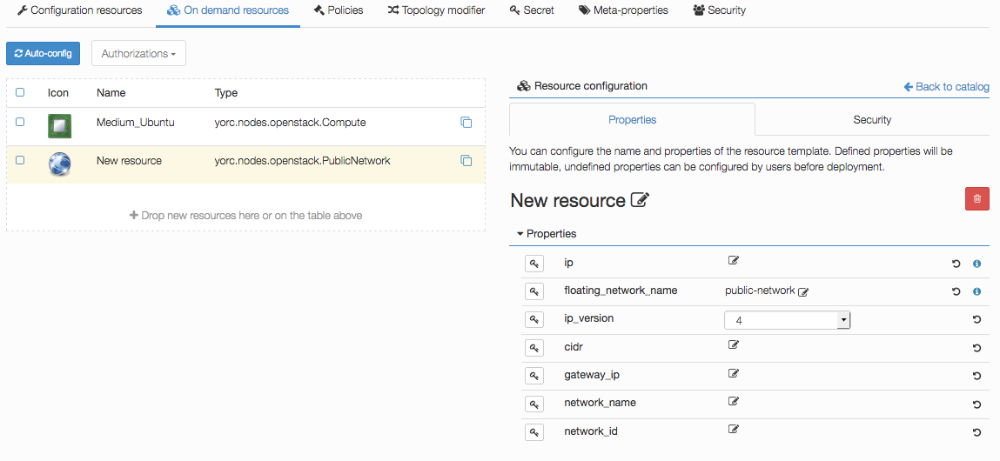
Click on the compute and set the image to the id of your image in OpenStack (in order to use our samples in next sections, please use an Ubuntu 14.04+ or Centos 7.2+ image), the flavor to 3 (medium for a default OpenStack config).
Set key_pair to the OpenStack keypair that correspond to the private key that you stored under ~/.ssh/yorc.pem during your Yorc server setup.
Finally, in the endpoint capability of the Compute, open the credentials complex type and set the user to a user available in your image (generally ubuntu for Ubuntu cloud images). This user will be used to connect to this on-demand compute resource once created, and to deploy applications on it (while the user used to create this on-demand resource is defined in the Yorc server configuration).
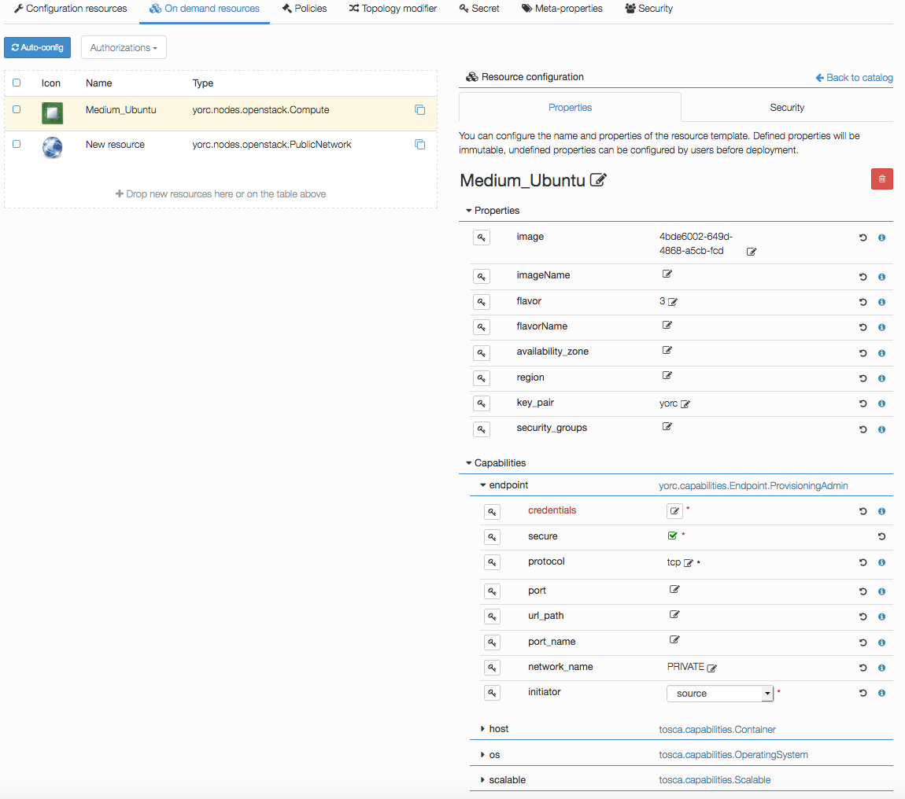
Configure a Slurm Location
Go to the locations page by clicking on
Create a new location clicking on and provide a location name. Select Slurm in the infrastructure type drop-down.
The details page of your location should appear.
Go to and add the following resource:
- yorc.nodes.slurm.Compute
Click on the compute, the following details should appear and show the endpoint credentials must be edited:
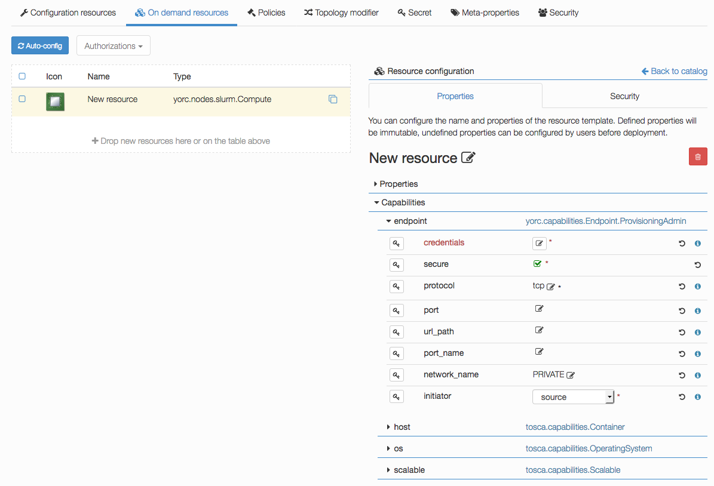
Edit credentials and specify a user that will be used to connect to this on-demand compute resource once created, and to deploy applications on it (while the user used to create this on-demand resource is defined in the Yorc server configuration):

You could define here as well either a password, provided as a token parameter value (token_type being set to password), or a private key by editing the keys parameter and adding a new key 0 with a value being the path to a private key, as below :

If no password or private key is defined, the orchestrator will attempt to use a key ~/.ssh/yorc.pem that should have been defined during your Yorc server setup.
Configure Slurm location to handle Docker workloads with singularity
The Slurm location ships a Topology Modifier that allow to transform a Docker workload into a Singularity workload backed by a Slurm job. This is exactly the same as what we do with the Kubernetes Location by transforming a Docker workload into a Kubernetes one. This allows to port an application modeled using generic Docker components on one or the other infrastructure.
At the moment, the following restrictions apply:
- Only Docker workloads of type Jobs are supported. That means that your DockerApplication should be hosted on a ContainerRuntime itself hosted on a ContainerJobUnit
- You can add DockerExtVolume components to mount volumes into your container. Currently we only support volumes of type
yorc.nodes.slurm.HostToContainerVolumethat means that we expect to mount a path of the actual host that will run the container. In Slurm context it is generally a path from a distributed (such as NFS) or parallel (Lustre, GPFS) filesystem or a temporary directory. - Resources limitations are not handled in the same way than in Kubernetes (see bellow)
Go to and add the following resource:
- yorc.nodes.slurm.ContainerJobUnit
- yorc.nodes.slurm.ContainerRuntime
- yorc.nodes.slurm.HostToContainerVolume
Limit resources used by containers
When backed to Docker Kubernetes uses a concept of CPU shares to limit containers CPU consumption.
This context make no sense in Slurm context where resources are strongly isolated.
So instead of relying on cpu_share, cpu_share_limit, mem_share and mem_share_limit of DockerApplications we rely
on the ApplicationHost capability of the ContainerRuntime hosting the DockerApplication. This capability has num_cpus and
mem_size properties that are used to request a given number of cpus and amount of memory to Slurm.
Configure a Hosts Pool Location
Go to the locations page by clicking on
Create a new location clicking on and provide a location name. Select HostsPool in the infrastructure type drop-down.
The details page of your location should appear.
Go to and add the following resource:
- yorc.nodes.hostspool.Compute
Click on the compute, the following details should appear:
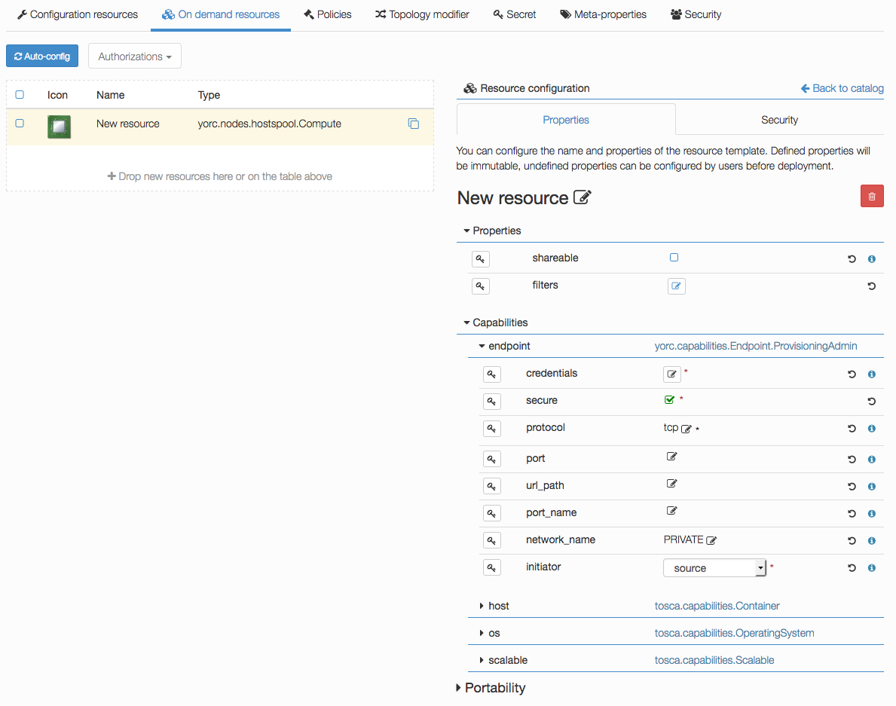
You can select the property shareable if you want to make this compute node shareable, so that different deployments could use this same resource.
Credentials don’t have to be defined here. For hosts in a Hosts Pool, credentials are defined in the Yorc server configuration.
Configure a Google Cloud Platform Location
Go to the locations page by clicking on
Create a new location clicking on and provide a location name. Select Google Cloud in the infrastructure type drop-down.
The details page of your location should appear.
Go to and add the following resource:
- yorc.nodes.google.Compute
- yorc.nodes.google.PersistentDisk
- yorc.nodes.google.PrivateNetwork
Click on the compute, the following details should appear, with here several properties set as explained below:
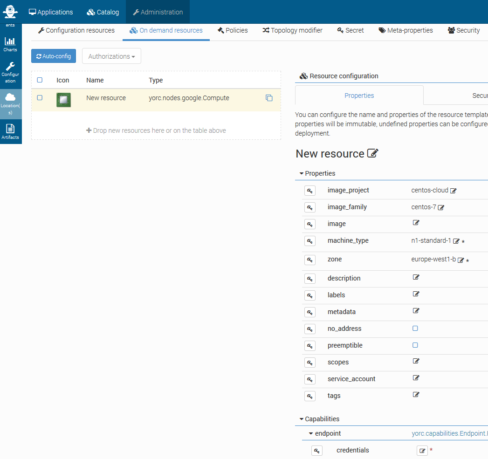
Specify which image to use to initialize the boot disk, defining properties image_project, image_family, image.
At least one of the tuples image_project/image_family, image_project/image, family, image, should be defined:
- image_project is the project against which all image and image family references will be resolved. If not specified, and either image or image_family is provided, the current default project is used.
- image_family is the family of the image that the boot disk will be initialized with. When a family is specified instead of an image, the latest non-deprecated image associated with that family is used.
- image is the image from which to initialize the boot disk. If not specified, and an image family is specified, the latest non-deprecated image associated with that family is used.
See available public images described at Compute Engine Public Images. For example, to use the latest CentOS 7 version, use image_project centos-cloud and image_family centos-7.
Set the machine_type value according to your needs in CPU and memory (default n1-standard-1). See list of available machine types.
Set the mandatory parameter zone to define the zone on which the Compute Instance should be hosted. See list of available regions and zones.
Edit credentials to provide a mandatory user name. This user will be used to connect to this on-demand compute resource once created, and to deploy applications on it.
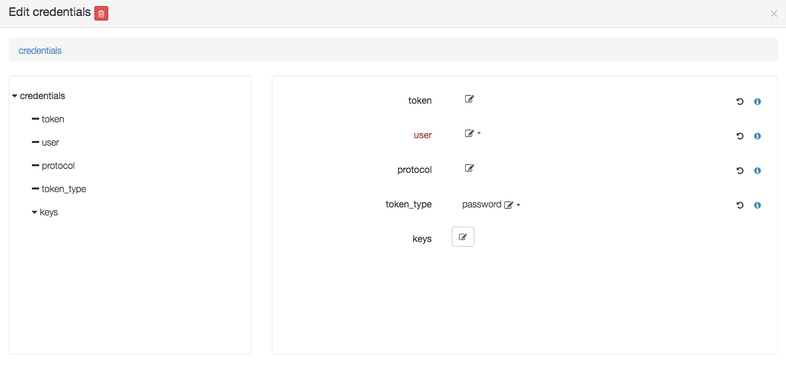
You could define here as well a private key by editing the keys parameter and adding a new key 0 with a value being the path to a private key, as below :
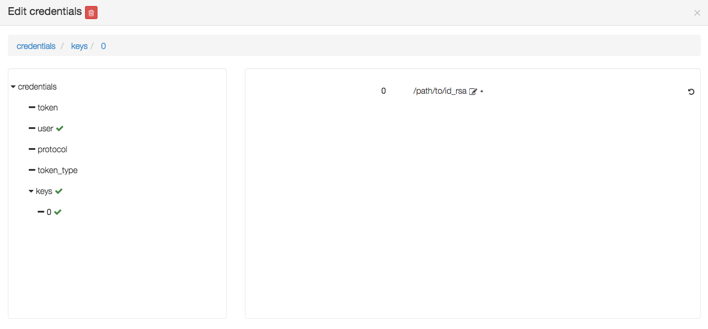
If no private key is defined, the orchestrator will attempt to use a key ~/.ssh/yorc.pem that should have been defined during your Yorc server setup.
The user you specify here must be defined, along with its associated public SSH key, either at your Google Project level, or at this Compute Instance level. See Google documentation for :
For example, assuming you have a private ssh key ./id_rsa and a public ssh key ./id_rsa.pub, you can first create a file containing a user name and the public key content:
echo "user1:**cat id_rsa.pub**" > userkeys.txtThen define this user and public key at the project level, using Google Cloud CLI:
gcloud compute project-info add-metadata --metadata-from-file ssh-keys=userkeys.txtThen, by default, all compute instances will inherit from this user/public key definition, the user will be created on the compute instance and you will be able to ssh on your compute instance running:
ssh -i ./id_rsa user1@<your instance external ip address>For details on other optional Compute Instance properties, see Compute Instance creation.
Click on the PublicNetwork, the following details should appear, with here several properties set as explained below:

This node type inherits from tosca.nodes.Network and allows to substitute generic Network type. At post-matching step, this node will be replaced by yorc.nodes.google.Address. You can directly use this node type if you need to define specific Google Address properties.
If you want to use any existing Google Static IP Addresses, you need to set the addresses parameter. It accepts a comma-separated list of addresses IPs.
For details on other optional Address properties, see Address Creation.
Click on the PersistentDisk, the following details should appear, with here several properties set as explained below:
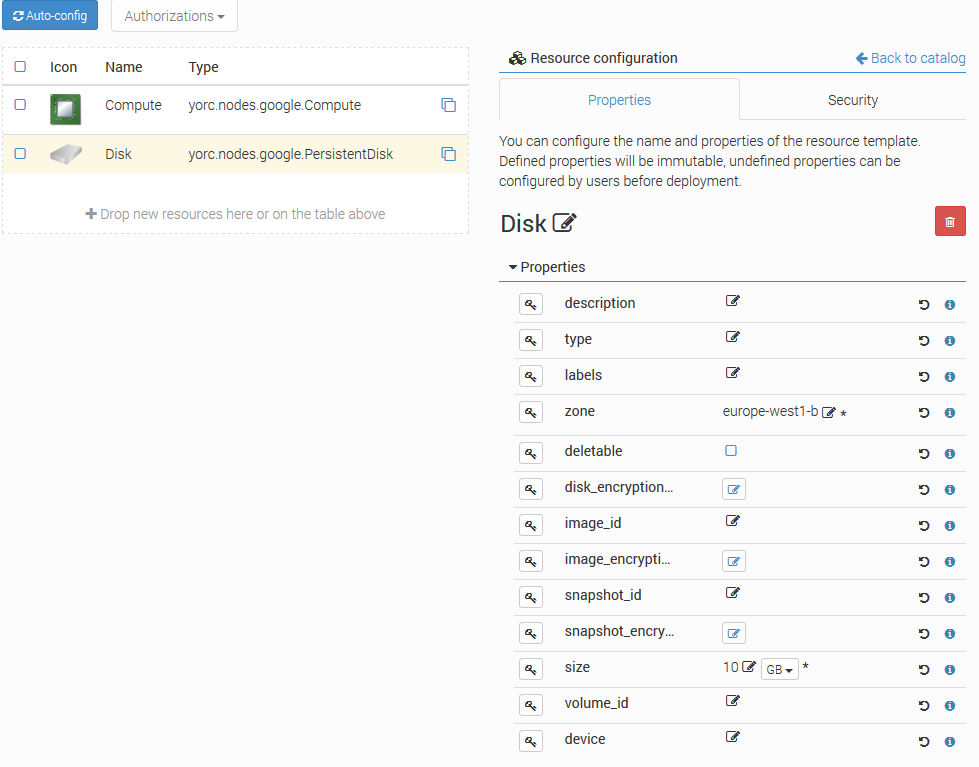
Set the mandatory parameter zone to define the zone on which the disk resides. In any case the disk must be on the same zone as the associated Compute instances. See list of available regions and zones.
Set the mandatory parameter size to define the required size for persistent disks.
If you want the disk to be deleted when the application referencing this disk is undeployed, check the parameter deletable. By default, the disk is not deleted.
If you want to refer to an existing disk, set the mandatory parameter volume_id with its Google Reference Name. This parameter allows comma-separated values of disk names.
If you want to attach the disk to a compute with a READ_ONLY mode, you need to set this property to the yorc.relationships.google.AttachesTo relationship between the disk and the compute.
For details on other optional PersistentDisk properties, see Persistent Disk Creation.
Click on the PrivateNetwork, the following details should appear, with here several properties set as explained below:
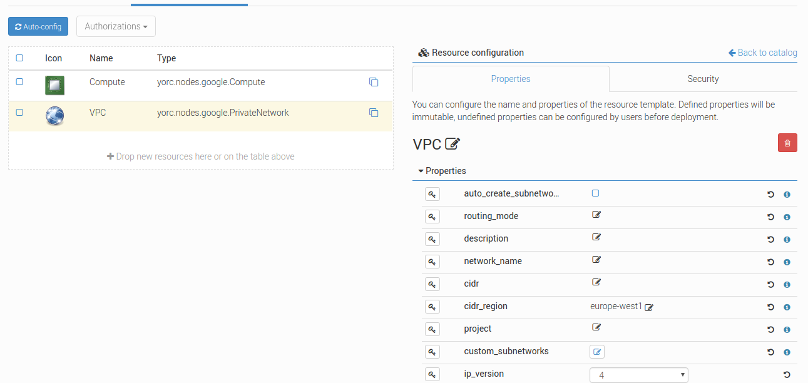
If you want to use an existing network, set the parameter network_name. Otherwise, let it blank.
You can create custom or default subnet for new or existing network too as long as there is no CIDR range overlaps.
For private network creation, You can specify subnets in three different ways:
- by checking the checkbox auto_create_subnetworks : Google will create a subnet for each region automatically with predefined IP ranges.
- by setting cidr and cidr_region : a default subnet will be created with the specified IP CIDR range in the Google specified region.
- by adding custom subnets : you can add several subnets with more accurate properties as described below.
You can as well use the auto-create mode and adding default and/or custom subnets as long as there is no CIDR range overlaps.
Click on the custom_subnetworks edit icon to create several custom subnets:
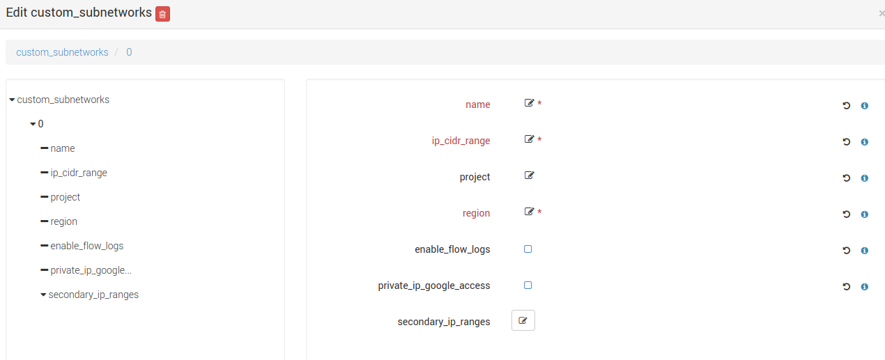
Set the mandatory parameters name, ip_cidr_range and region respectively to define the name of your custom subnet, its IP CIDR range and the Google region it owns. Note that subnet names must be unique in the Google project they owns.
You can configure secondary IP ranges for VM instances contained in this sub-network with secondary_ip_ranges list.
You can enable flow logging for this subnetwork by checking the checkbox enable_flow_logs.
You can allow the VMs in this subnet to access Google services without assigned external IP addresses by checking the checkbox private_ip_google_access.
For details on other optional Private Network properties, see VPC Creation.
- How-to connect a VM to a private subnet after creating the relationship between the VM and a PrivateNetwork ?
- Explicitly by setting the subnet property of the Google network relationship yorc.relationships.google.Network with the required subnet name.
- Implicitly with the default subnet if exists and in the same region than the VM or otherwise with the first matching subnet in the same region than the VM.
-
Are any firewall rules created for my private network ?
Yes, the following default firewall rules are automatically created for each subnet:
- Ingress rules from any incoming source for ICMP protocol and RDP and SSH ports (TCP 3389 and TCP 22)
- Ingress rules from any incoming subnet source for ICMP, TCP and UDP protocol on all port ranges (0-65535).
Configure an AWS Location
Go to the locations page by clicking on
Create a new location clicking on and provide a location name. Select AWS in the infrastructure type drop-down.
The details page of your location should appear.
Go to and add the following resources:
- yorc.nodes.aws.PublicNetwork
- yorc.nodes.aws.Compute
- yorc.nodes.aws.EBSVolume
Click on the compute, the following details should appear:
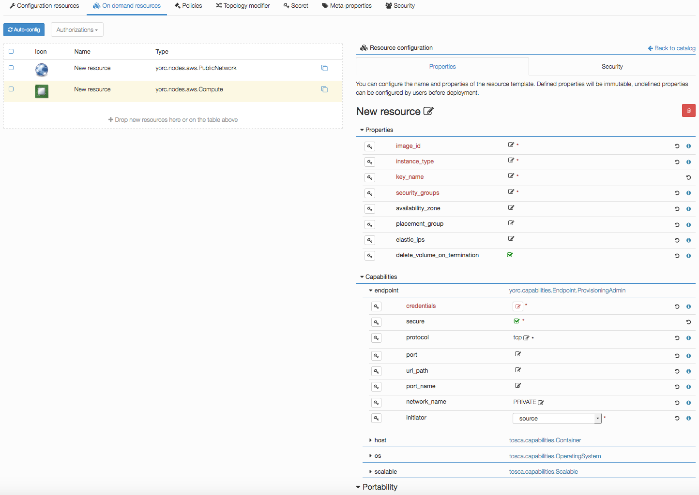
Edit mandatory parameters AWS image_id, instance_type, security_groups and key_name to provide the name of a key pair already known from AWS.
Click on the EBSVolume, the following details should appear, with here several properties set as explained below:
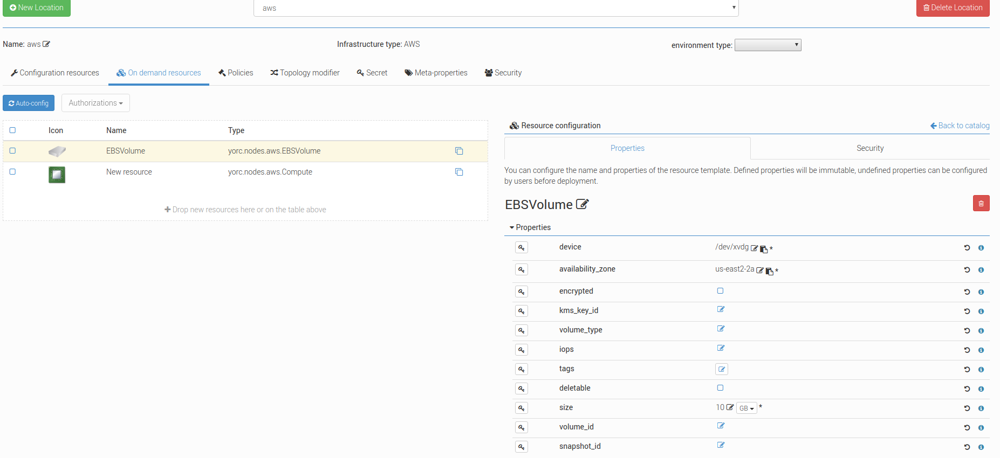
Set the mandatory parameter device to define the logical device name to expose to the instance (for example, /dev/sdh or xvdh). See Available Device Names. This can also be set by users during application creation.
Set the mandatory parameter availability_zone to define the AWS zone where the volume will be. This availability zone must be the same as the ones of the Compute instances to which the disk will be attached. See Regions, Availability Zones, and Local Zones for more information.
Set the mandatory parameter size to define the required size for volumes.
If you want the volume to be deleted when the application referencing this one is undeployed, check the parameter deletable. By default, the volume is not deleted.
If you want to refer to an existing volume, set the parameter volume_id with its Volume ID you find on AWS Console. This parameter allows comma-separated values of volumes names.
For details on other optional EBSVolume properties, see Creating an Amazon EBS Volume.
Edit credentials to provide a user name. This user will be used to connect to this on-demand compute resource once created, and to deploy applications on it (while user credentials used to create this on-demand resource are defined in the Yorc server configuration).
Configure a Kubernetes Location
In order to deploy applications to a Kubernetes location, the Yorc orchestrator must be connected to a properly configured Yorc server (see “Infrastructure configuration” chapter in Yorc documentation ; the Yorc server must be able to connect to the Kubernetes cluster’s master).
Select Yorc orchestrator and go to the locations page by clicking on . Create a location named kubernetes (or a name of your choice) and select Kubernetes on the infrastructure type drop-down. The details page of your location should appear.
Go to and search in the Catalog resources with type prefix org.alien4cloud.kubernetes.api.types. You have to add the following resources:
- org.alien4cloud.kubernetes.api.types.Deployment
- org.alien4cloud.kubernetes.api.types.Job
- org.alien4cloud.kubernetes.api.types.StatefulSet
- org.alien4cloud.kubernetes.api.types.Container
- org.alien4cloud.kubernetes.api.types.Service
- org.alien4cloud.kubernetes.api.types.volume.* # the volume types needed by applications
Go to view to check modifiers are uploaded to your location:
- Kubernetes modifier having post location match deployment phase
- Yorc modifier for kubernetes having post-node-match deployment phase
If you defined a K8S_NAMESPACE meta-property (see here how to do so <location_config_meta_props_section>) with location target, you can use its value to specify the namespace in which the Kubernetes resources will be created when deploying applications to this location.
In the image below, the user specifies that Kubernetes objects will belong to the namespace my_location_namespace.
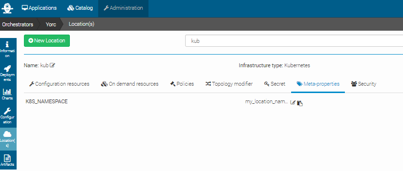
Note that the user can choose to use a particular namespace for each application. In this case, the K8S_NAMESPACE meta-property with application target must be used like in the image below:

If both K8S_NAMESPACE meta-property with location target and K8S_NAMESPACE meta-property with application target have values set, then the one with location target has higher priority, so its value will be used to specify the Kubernets namespaces.
In any case, the specified namespace must exist in the Kubernetes infrastructure.
To simplify the deployment of application in test and development phase, we allow users not to define a specific namespace for its applications. In this case there is no need to define a K8S_NAMESPACE meta-property, and the Kuberneters objects will be created in a namespace specially created for each application. The namespace is deleted after the application is undeployed. The name of the created namespaces is constructed using the application name + the application’s environment name.
Edit (pull request)